eSync의 종단간 보안 (End to end Security in eSync)
개요 (Overview)
eSync는 커넥티드 차량의 소프트웨어를 무선(OTA)으로 업데이트하고 데이터를 수집하는 기술이다. 서로 다른 운영체제로 여러 네트워크·버스에 흩어진 다수의 전자 제어기를 하나의 보안 데이터 파이프라인으로 다룬다.
이 문서는 eSync의 보안 아키텍처를 다룬다. eSync는 eSync Server에서 eSync Client 게이트웨이를 거쳐 종단 노드(HU, T-Box, ECU)까지 종단간 보안을 제공한다. ECU에서의 보안 수준은 그 ECU의 능력(메모리·연산·암호 지원)에 달려 있다. ECU가 자원 제약이 크면, 페이로드는 OTA 체인의 마지막 "안전한 홉(hop) 노드"까지만 보호된다.
주의: 사용하는 암호 모듈은 합의된 표준(consensus standards)을 따라야 한다. 따르지 않는다면 차량 제조사가 그 사용을 정당화해야 한다.
eSync Server-Client-Agent 모델
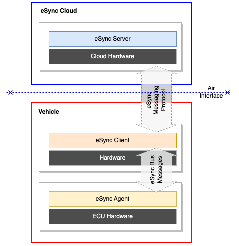
세 하위 시스템(Server·Client·Agent)이 차량과 인프라 양 끝에서 암호화된 컴포넌트의 전달·설치를 담당한다. 세 시스템은 서로 독립적으로 동작하며, 한쪽이 다른 쪽을 막거나 기다리지 않고 매끄럽게 협력해 OTA 업데이트를 수행한다.
- eSync Cloud: eSync Server + 클라우드 하드웨어
- Vehicle: eSync Client(차량 내 게이트웨이) + eSync Agent(ECU 상주)
- 서버↔차량은 eSync Messaging Protocol(Air Interface), 차량 내부는 eSync Bus Messages로 통신한다.
eSync 전반의 보안 레벨 (Security Levels across eSync)
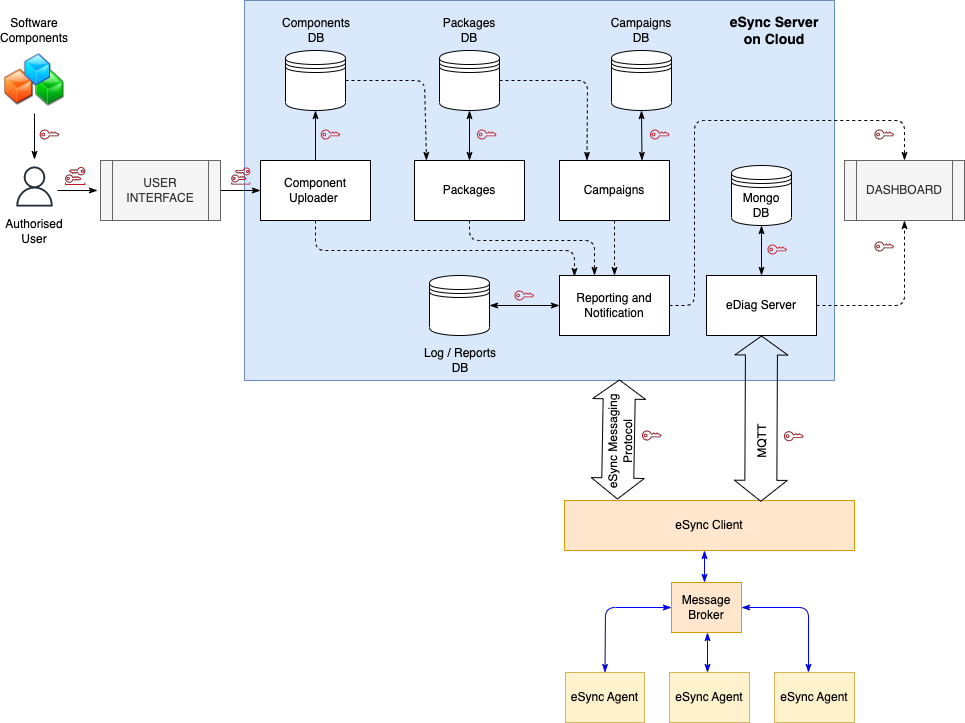
OTA 업데이트는 원격 차량 내부의 엣지 디바이스까지 도달하므로, 전 과정에서 업데이트가 훼손되지 않도록 광범위한 보안이 필요하다. eSync 시스템의 모든 인터페이스에 보안이 적용된다(사용자 인터페이스, 컴포넌트 업로더, 패키지·캠페인 DB, 리포팅/알림, eDiag 서버, MongoDB·대시보드, eSync Client, 메시지 브로커, eSync Agent 등).
중요 노트 — 최소 보안 요건 (Important notes)
eSync OTA는 최소 보안 요건을 정하고, 그 위에 파이프라인 보안을 강화하는 구조를 제공한다. 충족해야 할 최소 조건:
- 인증서: eSync Server의 SSL/인증서, eSync Client·Agent·사용자(로그인·컴포넌트 서명·업로드·캠페인 배포)용 인증서.
- 암호화: 종단간 암호화가 원칙. 단, 엣지 디바이스가 복호화 능력이 없으면 예외로 하되, 구현자는 평문 페이로드를 안전하게 다뤄 대상 디바이스까지 전달해야 한다.
- TLS: 별도 언급이 없으면 모든 통신은 최신 표준이 요구하는 버전의 TLS로 한다.
- 인증기관(CA): 구현자는 신뢰할 수 있는 CA를 도입한다.
- PKI: 원하는 공개키 기반구조는 구현자가 직접 관리한다. † PKI 인프라의 규정은 eSync 사양의 범위를 벗어난다.
- 인증서 갱신/폐기: 모든 인증서는 주기적으로 갱신·교체한다. 갱신 시점은 구현자가 정하되 eSync Alliance는 45~90일을 제안한다.
- 인증서는 "장수명"이면 안 된다. 단수명 인증서(예: 90일)를 다룰 수 있어야 한다.
- NIST 권고상 3년을 넘지 않아야 하며, Apple 등은 398일 초과 인증서를 거부한다.
- UNECE·NIST·NHTSA·ITU-T X.1373 등 해당 규정을 만족해야 한다.
- 알고리즘: 가능하면 독자·특허 알고리즘으로 보안을 강화할 수 있으나, eSync OTA 솔루션 전반에서 동일하게 유지해야 한다.
- 컴플라이언스: 구현 지역의 규제 기관이 정한 보안 지침을 준수해야 한다.
최상위 아키텍처 (Top Level Architecture)
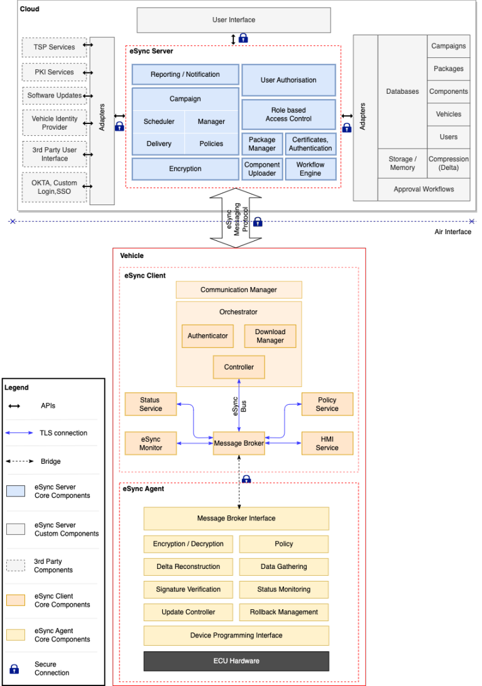
보안은 다음 모든 인터페이스에 적용된다.
- 사용자 인터페이스 ↔ eSync Server
- 3rd Party 컴포넌트 ↔ eSync Server
- 의존 컴포넌트 ↔ eSync Server
- eSync Server ↔ eSync Client
- eSync Client ↔ eSync Agent
클라우드(eSync Server) 주요 구성요소: 리포팅/알림, 사용자 인가, 캠페인(Scheduler·Manager·Delivery·Policies), 역할 기반 접근제어(RBAC), Package Manager, Certificates/Authentication, Component Uploader, Workflow Engine, Encryption. 어댑터를 통해 TSP·PKI·SW 업데이트·차량 신원 제공자·3rd Party·OKTA/SSO 등과 연동하고, DB(캠페인·패키지·컴포넌트·차량·사용자·승인 워크플로)와 스토리지(델타 압축)를 둔다.
차량(eSync Client) 주요 구성요소: Communication Manager, Orchestrator(Authenticator·Download Manager·Controller), Message Broker, Status/Policy/HMI Service, eSync Monitor. eSync Agent: Message Broker Interface, 암복호화, 델타 재구성, 서명 검증, 업데이트 컨트롤러, 롤백 관리, Device Programming Interface, 상태 모니터링 등.
일반 종단간 보안 (General end to end Security)
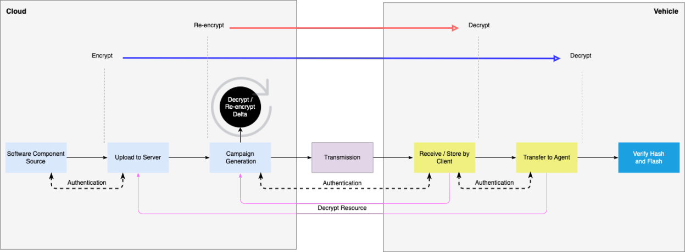
OTA 전 단계에서 인증서로 인증·검증한 뒤에야 업데이트가 진행된다. 데이터는 클라우드에서 암호화되어 차량까지 전달되고, 필요 시 중간에서 재암호화(re-encrypt)된다. 전달 링크 예: eSync Cloud→차량 내 eSync Client, eSync Client→eSync Agent, eSync Agent→ECU. 모든 단계의 인증으로 데이터 무결성을 보장한다.
다중 보안 레벨 (Multiple Levels of Security)
OEM은 링크별 암호화 수준을 선택할 수 있다.
- 송수신자용 X.509 인증서, 전 키에 대한 PKI, (고성능 프로세서 기기의) 개인키
- 데이터 무결성: SHA로 전송 중 변조 여부 확인
- SHA 값에 인증서로 서명(다단계 서명 포함)
- 페이로드 암호화: 128/192/256비트 AES 또는 Camellia
- 키 관리는 HSM 사용. 모든 트래픽은 TLS.
eSync Server가 지원해야 하는 암호 조합:
| 암호화 방식 | ECDH | DH | RSA |
|---|---|---|---|
| AES-GCM | X | X | X |
| AES-256 | X | X | |
| AES-128 | X | ||
| AES | X | X | |
| Camellia-128 | X | X | |
| Camellia-256 | X | X |
구현 선택과 이점: 일부 알고리즘은 연산 부담이 커서 저사양 ECU엔 무리다. 사양은 링크별 조합 최적화를 권한다. 시스템 설계자는 링크마다 다른 수준을 자유롭게 쓸 수 있고, eSync Client는 이에 무관하다. 예를 들어 어떤 ECU는 AES-128만 이해하고, 다른 트래픽은 다른 표준으로 암호화될 수 있다.
인증서 프로세스 (Certificate Process)
최초 인증서 생성 (First-time certificate generation)
eSync Server는 RSA/ECC 개인키와 CSR을 만들어 PKI 제공자에 제출해 eSync Server 인증서를 발급받는다.
- eSync 관리자가 ECC 개인키를 생성한다.
- 그 개인키로 CSR을 만든다.
- PKI 제공자 애플리케이션에 로그인해 CSR을 제출한다(검증·서명·반환).
- PKI 제공자가 선호 방식으로 CSR을 검증한다:
admin@<OTA_server_FQDN>로 검증 링크 이메일 / DNS에 CNAME 추가 / 서버 루트에 텍스트 파일 업로드 중 하나. - 검증이 끝나면 인증서 다운로드 링크를 주거나 이메일 첨부로 보낸다.
서버 서명 (Server Signing)
eSync Server는 업로드 시 인증서를 검증한 뒤, 원 서명을 제거하고 자신의 서명으로 교체한다. 서명에 쓰는 값:
- X.509 인증서 체인(다중 인증서 허용), PEM 인코딩
- 대응 개인키(PKCS#1 또는 PKCS#8, PEM), 필요 시 개인키 암호(
server-private-key설정)
주의: 디바이스는 eSync Server가 서명한 콘텐츠만 수용하고, 개발자가 서명한 콘텐츠는 인정하지 않아야 한다.
서버 서명 콘텐츠의 인증서 검증
eSync Server는 자기 서명의 유효성도 확인한다. 업로드 콘텐츠 검증과 유사하되: 사용자명 확인은 없고, 서명자가 eSync Server 그룹에 속하며 "sign" 인가를 포함해야 한다.
디바이스 인증 (Device Authentication)
eSync Server는 들어오는 모든 디바이스를 상호 SSL(mTLS)로 인증한다. 모든 디바이스는 유효한 X.509 인증서를 제시해야 하고, 지정된 신뢰 앵커(trust anchor) 목록에 대해 유효해야 한다. SSL 인증 성공 후 인가를 수행한다: 인증서 내 디바이스 ID 확인, 디바이스 그룹 소속 확인, "SOTA" 인가 확인.
인증서 갱신 (Certificate Renewal)
eSync Server 인증서가 만료 임박(보통 만료 45~90일 전, 구현마다 다름)이면 관리자가 PKI 포털에서 갱신 요청을 제출하고, 검증 후 새 인증서를 받는다.
인증서 검증 (Certificate validation)
eSync Client가 인증서를 검증한다. 발급 PKI가 인증서를 폐기하지 않았는지 확인하며, eSync Server는 OCSP Stapling과 Must-Staple로 폐기 인증서를 탐지한다. eSync Server가 TSP·차량 내 eSync Client로부터 SSL 인증서를 받으면 다음을 수행한다.
- 신뢰 체인(Chain of trust): 로컬 신뢰 저장소의 Root·Intermediate CA 인증서와 제시된 인증서로 체인을 구성해 Root CA까지 잇는다.
- 유효기간: "Not Before"/"Not After"로 만료 여부 확인.
- Common Name: CN 값으로 인증서가 제시 주체의 것인지 확인.
- 폐기 상태: PKI 인터페이스가 정의한 대로 OCSP 호출.
- 코드 서명 인증서: 업로드 전 PKI 제공자 인증서로 업데이트 SW 서명. 업로드 후 eSync Server가 서명을 검증하고, 확인되면 자기 개인키로 패키지에 서명해 컴포넌트 DB에 저장한다.
- (권고 워크플로) 업로드 컴포넌트를 임시 메모리 풀에 두고, 업로더에게 확인 이메일을 보낸 뒤, 인가된 사용자가 확인하면 컴포넌트 DB로 옮긴다.
코드 서명 인증서는 eSync Server가 유효성·인가 사용자 소속을 판별할 수 있는 특정 형식을 따른다. 벤더 인증서를 올바로 검증하려면 그 형식을 벤더에 전달하거나 형식을 설명해야 한다.
디바이스 인증서 (Device certificates)
- CN: eSync Client 인증서의 CN은 eSync Client가 설치·구동되는 시스템의 시리얼 번호다.
- 유효기간: eSync Client·Agent 인증서는 자주 만료되도록(보통 45~90일) 설정해 신선도를 유지하고 침입을 막는다. 매번 만료 여부를 확인한다.
- 최초 프로비저닝: ECU 벤더가 PKI와 연동해, ECU 이미지(또는 eSync Client)를 플래시하기 전에 ECU 인증서를 요청한다. ECU 시리얼로 CSR을 만들어(CN=ECU 시리얼) PKI에 요청하고, PKI가 CN=
<ECU_Serial_Number>로 OEM 유효기간의 인증서·개인키를 발급한다. 벤더는 파일시스템 인증서를 eSync Client가 접근 가능한 위치에 저장한다. - 보안상, Excelfore는 ECU 벤더가 개인키를 직접(ECC로) 생성하고 CN=
<ECU_Serial_Number>로 CSR을 만들어 PKI에 보내 그 CSR로 발급받기를 권한다. ECU가 CSR 생성이 전혀 불가능할 때만 위 방식(PKI가 키 생성)을 쓴다. - 인증서 교체: eSync Client 인증서는 OEM이 정한 기간에 만료된다. 폐기되면 eSync Server가 새 클라이언트 인증서를 요청해 차량 내 클라이언트로 내려보낼 수 있다(새 RSA 키+CSR, 캠페인으로 배포, Agent가 구 인증서를 교체, 검증 호출로 확인, 실패 시 롤백).
- 업로드 콘텐츠 검증: 업로드 콘텐츠 서명 인증서는 ① 업로더 사용자명과 일치, ② Developers 그룹 소속, ③ "sign" 인가 포함이어야 한다.
- OCSP: eSync Server·Client는 OCSP로 서로의 인증서를 검증한다. 설정 가능한 단정값:
DISABLED(기본, 검사 안 함)·NONE(검사하되 OCSP 실패해도 수용)·REQUIRED(OCSP 속성 없으면 인증 실패)·ENFORCED(OCSP 응답이 명시적 "GOOD"이 아니면 실패).
보안 권고 [Uptane/TUF]
- 키 침해 취약성: 단일 키(또는 임계값 미만의 키)만 장악해도 클라이언트를 침해할 수 있다(온라인 단일 키·오프라인 단일 키 모두). eSync Server의 완화책: 인증서 서명 키, 승인 후 컴포넌트 서명 키, eSync Client의 서버 통신 키를 각각 분리한다. 이로써 미러 서버발 악성 업데이트를 막는다.
- 신뢰(Trust): 신뢰는 영구적이면 안 되고(미갱신 시 만료), 모든 당사자에게 동등하면 안 된다(구획화된 신뢰 — 루트가 정한 파일에 한해서만 신뢰). eSync Server는 인증서를 45~90일마다 만료·재발급하도록 요구한다(갱신 절차는 본 문서 범위 밖).
eSync OTA 폴트 톨러런스
- 캠페인 중 업데이트 실패는 일시적으로 간주하고 정해진 횟수만큼 재시도한다. 캠페인 종료 시에만 'Fail'이 확정된다.
- 클라우드↔차량 장애: 연결 실패 시 서버가 재시도 예약, 전송 중단 시 클라이언트가 버퍼링하고 누락분 재전송 요청.
- 차량 내부: 업데이트 실패 시 Agent가 자동 재시도, 손상 시 클라이언트가 서버에 재전송 요청. eSync는 클라이언트에 "미러" 저장공간을 요구하지 않고 Agent로 직접 전송한다.
- 중요 장치(Critical device): OS 구동 기기, 게이트웨이/스위치 등. 손상 시 복구를 위해 Insurance Kernel(최소 코드베이스)로 통신을 유지하고 호스트 OS를 재설치할 수 있게 한다.
보안 시퀀스 (Security Sequence Diagram)
OTA 업데이트 흐름: ECU 벤더 → OEM → OTA Server → eSync Client → eSync Agent → ECU(최종 플래시). 최종 바이너리 이미지의 무결성이 핵심이며, eSync Server는 SHA로 이미지 무결성을 보장한다.
- 컴플라이언스 노트: SHA-256 권고(NIST). 최신 합의 표준의 해시 사용 권고. NIST는 SHA-224를 아직 허용하나 독일 BSI는 권장하지 않는다.
- 동작 원리: 캠페인 내 각 컴포넌트에 Secure Hash가 결합(승인 시 생성, 영구 유지). 해시 키는 RSA/DH로 암호화되어 인증된 송신자가 만들었음을 보장한다. 종단 디바이스가 수신 이미지의 SHA를 계산해 복호화된 SHA와 비교한다. 불일치 시 전송 오류·변조로 판단한다.
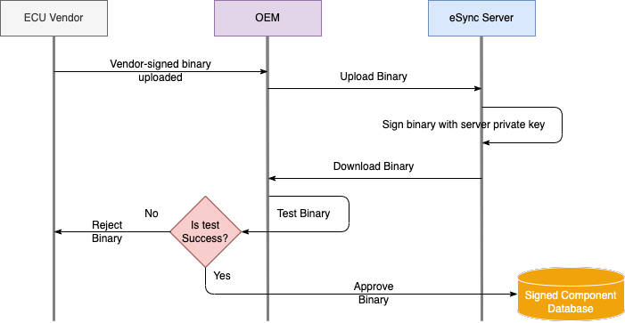
컴포넌트 업로드 (ECU 벤더 → eSync Server): 벤더가 서명한 바이너리를 OEM이 업로드 → eSync Server가 서버 개인키로 서명 → OEM이 다운로드·테스트 → 성공 시 승인 → 서명된 컴포넌트 DB에 저장. (권고이며 강제 아님. 컴포넌트 서명은 보안상 eSync Server 밖에 두되, 필요 시 업로드 워크플로에 통합 가능.)
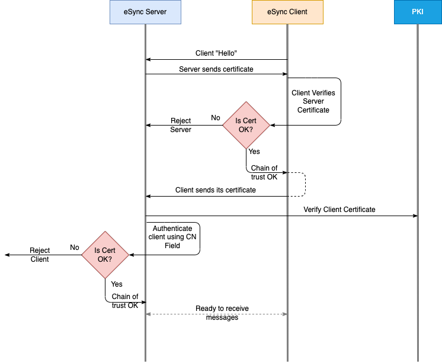
eSync Server ↔ eSync Client 인증서 검증(상호): Client "Hello" → 서버가 인증서 제시 → 클라이언트가 서버 인증서 검증(체인) → 클라이언트가 자기 인증서 제시 → 서버가 CN으로 인증 → 양측 OCSP 검증 후 TLS 수립. 실패 시 거부. 모든 검증은 감사 로그로 남긴다.
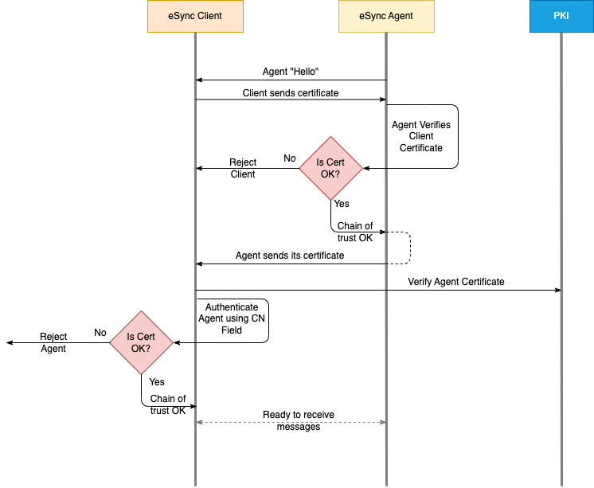
eSync Client ↔ eSync Agent 인증서 검증(상호): 위와 유사하되 OCSP 호출 없음. 성공 후에만 상태·정보를 주고받는다.
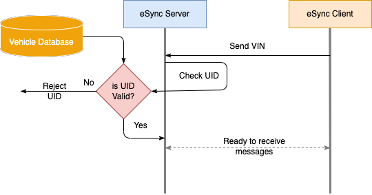
Secure UID 검증: Client가 VIN 전송 → 서버가 차량 DB의 UID와 대조(make·model·year·location 등) → 유효 시 진행, 불일치 시 무통보 거부. UID 호출 로그는 선택(사양 강제 아님).
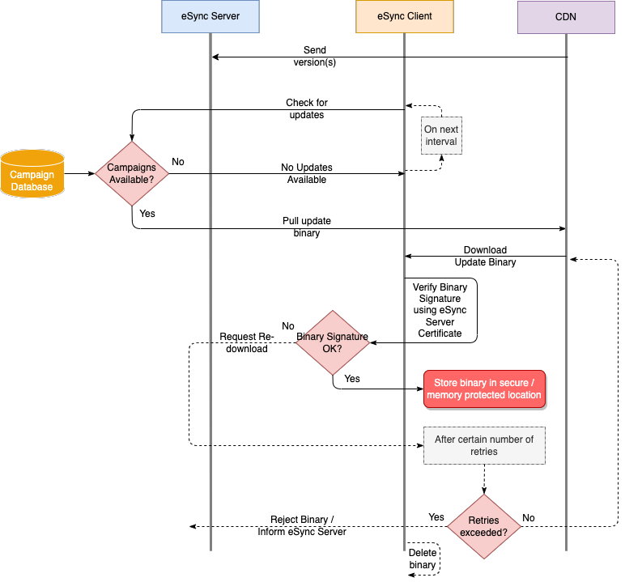
업데이트 확인·다운로드: Client가 버전 전송 → 서버가 캠페인 DB 확인 → 있으면 CDN에서 바이너리 다운로드 → eSync Server 인증서로 바이너리 서명 검증 → 유효 시 보호 메모리에 저장, 무효 시 재시도, 초과 시 폐기·서버 통보. 다운로드는 바이너리 모드, 청크 해시로 무결성 확인.
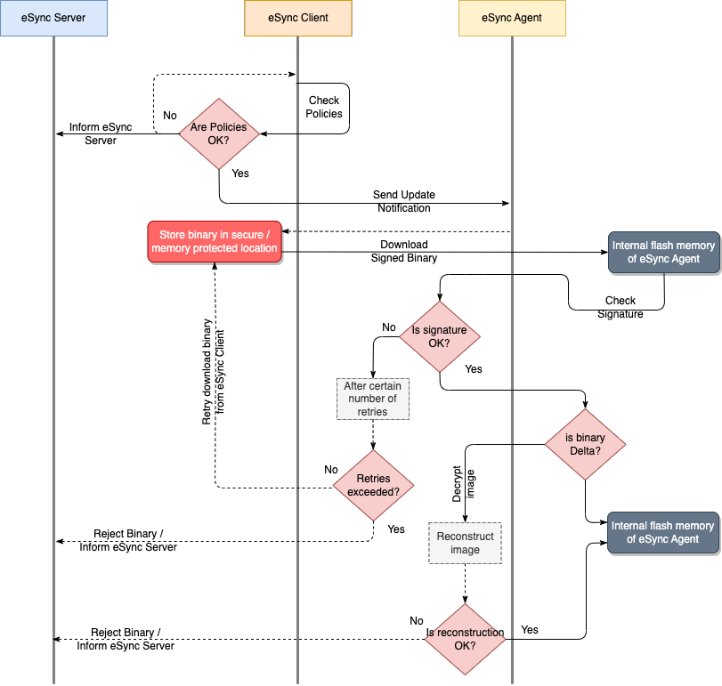
정책 확인·Agent 전송: Client가 정책 확인 → 서명된 바이너리를 Agent 플래시 메모리로 다운로드 → Agent가 자체 SHA 검증 → 델타면 이미지 재구성 → 플래시 준비. 무효 시 재시도 후 거부.
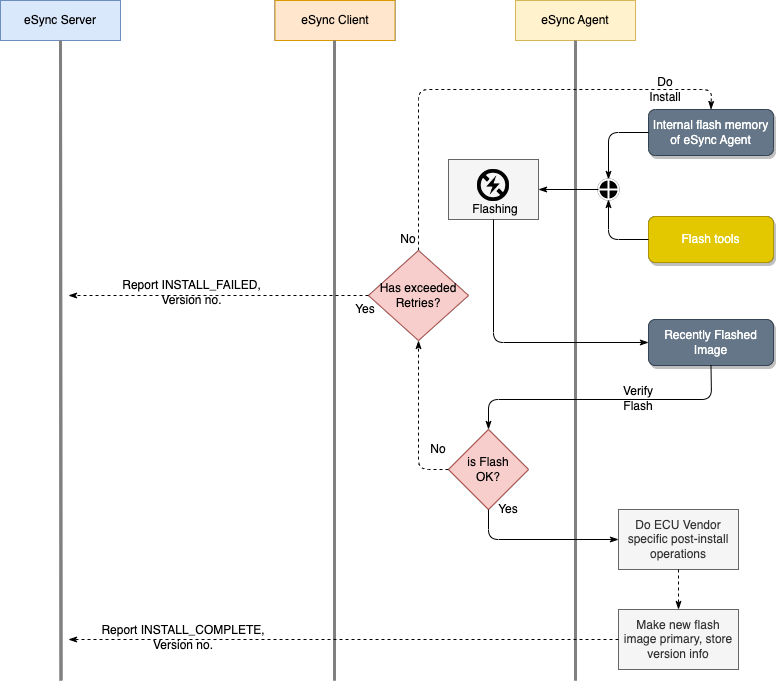
플래시·상태 갱신: Agent가 플래시 → 검증 → 성공 시 벤더별 후처리·새 이미지 primary 지정·버전 저장 →
INSTALL_COMPLETE보고. 실패 시 재시도 후INSTALL_FAILED보고.
서버와 애플리케이션 사이 (Between Server and Application)
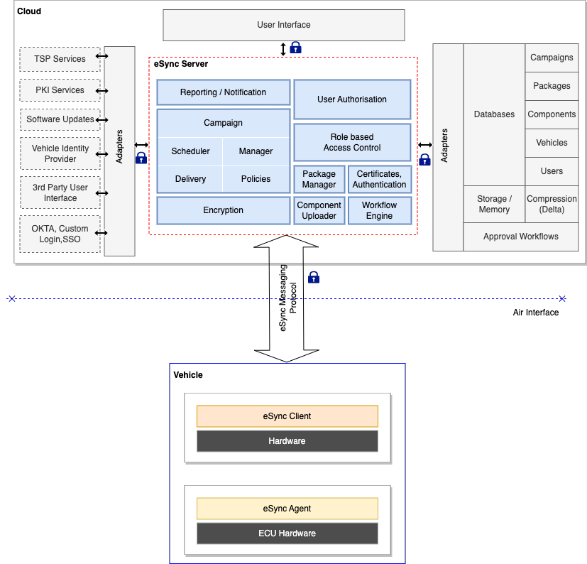
eSync 클라우드 내 eSync Server↔애플리케이션 보안. 컴포넌트 업로드부터 종단 소비·상태 보고까지 종단간 보안을 적용한다.
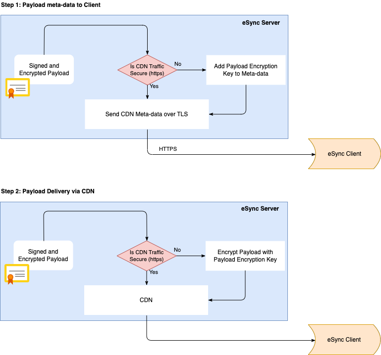
- Secure CDN 워크플로: ① 메타데이터를 클라이언트에 전달 — CDN 트래픽이 HTTPS면 그대로, 아니면 페이로드 암호화 키를 메타데이터에 추가해 TLS로 전송. ② CDN으로 페이로드 전달 — HTTPS면 그대로, 아니면 페이로드 암호화 키로 암호화해 전달.
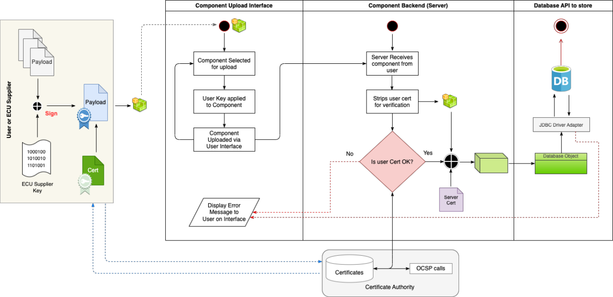
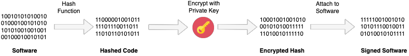
- 컴포넌트 업로드 보안 흐름: 사용자/벤더가 키로 서명한 페이로드를 UI로 업로드 → 서버가 사용자 인증서를 떼어 검증(OCSP) → 유효하면 DB 저장, 무효면 오류 표시.
eSync Server 세부:
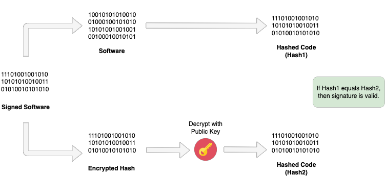
- SW 서명·검증: 업로드 SW는 개발자 개인키로 서명해야 한다. 서명 = SHA-256 해시 → 개인키로 암호화 → SW에 부착. 검증 = 개발자 X.509 인증서로 서명 확인(Hash1 == Hash2 이면 유효).
- SW 관리: eSync Server가 자기 키로 서명 후 저장(저장 시 암호화).
- 접근: 캠페인 매니저 접근은 인증 필요. OEM SSO 연동으로 MFA 적용.
- DDoS 방지: 퍼블릭 클라우드 서비스 활용, 온프레미스면 OEM이 직접 구축.
- 애플리케이션 방화벽: HTTPS 보안 포트 외 외부 포트 차단.
- DB: 외부에서 인바운드 불가, 애플리케이션 서버만 보안 채널로 접근.
- 로그·감사: 로그인 시도(성공·실패), SW 검증 과정, 사용자·역할 관리 변경을 기록·감사.
서버와 클라이언트 사이 (Between Server and Client)
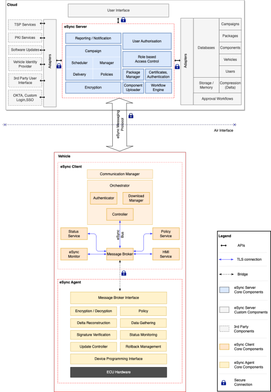
- 통신: TCP/IP 위 TLS. 대칭 암호로 기밀성, 상대 인증, MAC로 무결성 보장.
- 인증: eSync Server가 차량이 제시한 X.509 인증서를 검증(CA까지 체인·유효기간·CN, OCSP로 폐기·만료 확인).
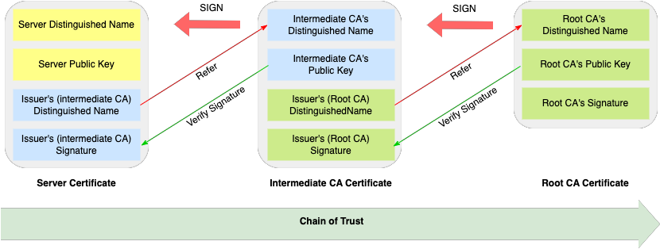
- 신뢰 체인: Server 인증서 ← Intermediate CA ← Root CA. 각 상위 CA의 공개키로 하위 서명을 검증하며 Root까지 잇는다.
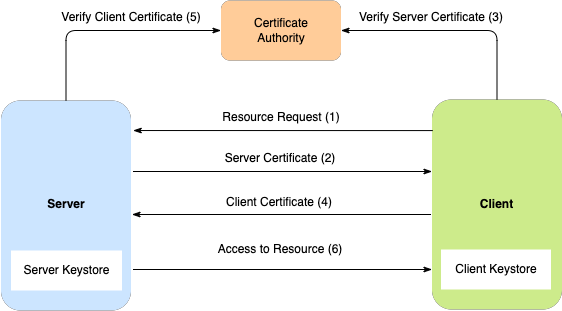
- 클라이언트-서버 인증: ① 자원 요청 → ② 서버 인증서 → ③ CA로 서버 인증서 검증 → ④ 클라이언트 인증서 → ⑤ CA로 클라이언트 인증서 검증 → ⑥ 자원 접근 허용.
- 암호화: 서버↔클라이언트 전 통신은 TLS로 암호화.
- SW 전송: eSync Server가 서명한 업데이트 SW를 TLS 링크로 차량 클라이언트에 전송(암호화됨).
- eSync Client: 서버 X.509 인증서를 CN·신뢰 체인으로 검증. 다운로드한 SW의 서명·해시를 eSync Server 인증서로 검증(두 해시 일치 확인). Agent도 서명을 재검증해 last mile까지 무결성을 보장한다.
클라이언트와 에이전트 사이 (Between Client and Agent)
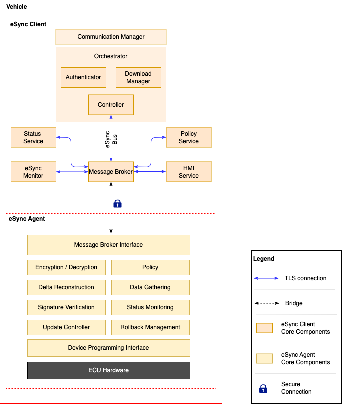
- 통신: eSync Client↔Agent는 TLS 버스로 통신(전 메시지 암호화).
- 인증: Client가 Agent의 X.509 인증서로 인증하고, Agent도 Client의 X.509 인증서를 검증한 뒤 TLS를 수립한다.
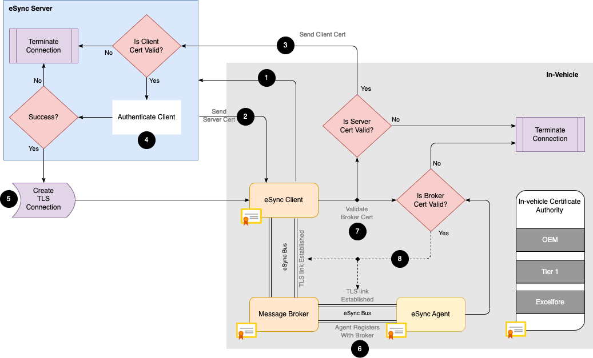
- 차량 내부 채널 보안: 차량 내 채널은 X.509로 보호한다. Client↔Server가 인증서를 교환·검증해 보안 파이프를 만든다. 차량 시동 시마다(설정 가능) Client가 인증서를 제시·검증하고 웹소켓 연결로 UID 전송·업데이트 확인·다운로드·상태 보고·데이터 수집을 수행한다. 차량 내 인증기관(in-vehicle CA)이 차량 내부 구성요소 인증서를 관리해야 한다.
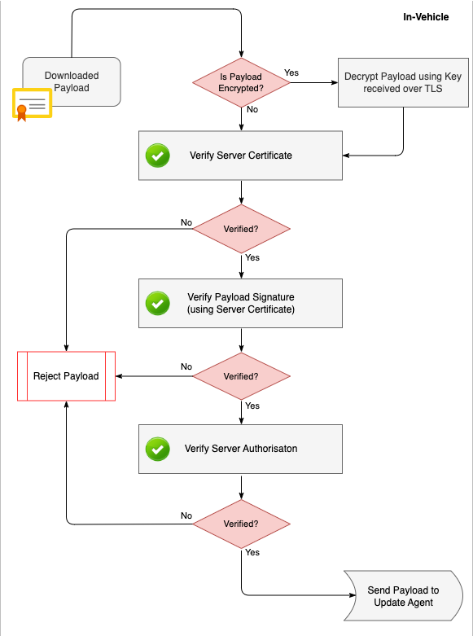
- 보안 in-vehicle 워크플로: 페이로드 암호화 시 TLS로 받은 키로 복호화 → 서버 인증서 검증 → 페이로드 서명 검증(서버 인증서) → 서버 인가 검증 → 모두 통과해야 Update Agent로 전달, 하나라도 실패 시 거부. 페이로드 인증서 검사를 "hard decision"으로 두어 무효 페이로드가 종단에 도달하지 못하게 한다.
부록: 우리 프로젝트(CRA) 대응표 — 번역자 정리
원문에 없는 내용. eSync 개념을 우리 DOC 체계와 잇기 위한 참조. (상세 대응·충돌은 별도 검토 대상)
| eSync | 우리 프로젝트 |
|---|---|
| eSync Server (클라우드) | 배포 시스템(자체 OTA Platform) |
| eSync Client (차량 내 게이트웨이) | TGU(인스톨러) |
| eSync Agent (ECU 상주) | 타겟 제어기의 업데이트 에이전트 |
| PKI는 구현자 몫(범위 밖) | DOC-10 PKI(Root/Dev-IC/CS-IC/KMS)가 그 자리 |
| 서버 재서명(디바이스는 서버 서명만 신뢰) | 우리는 이중서명(배포 서명=CS-IC + 펌웨어 서명=개발자). 검증 대상 차이 — 조정 필요 |
| 디바이스 인증서 단수명 45~90일 | 부품 정품 인증서 20년. 충돌 — 재검토 |
| OCSP 필수(서버↔클라이언트) | 오프라인 타겟은 OCSP 불가. 폐기 전략 과제(트래커 B6) |
| CN=시리얼, ECC 키+CSR 자체생성, HSM | 부품 정품 인증서 CN=Serial, DOC-20 §4.1과 일치 |
| vdb / 차량 UID·VIN 검증 | VLM의 실체 후보 |
| campaigns / 캠페인 매니저 | 배포 캠페인 구조 |
| CRA 미언급 | CRA 대응은 우리 몫 |